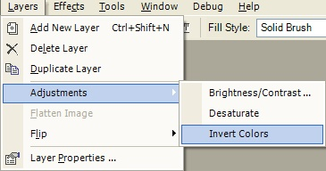

Invert Colors Effect
|
 If there is a selection, this effect will only apply to that selection. Otherwise, this effect will apply to an entire active layer. |
An image altered by the Invert Colors Effect:
| Original Image | After Inversion |
|
|